|
Associate Professor (Tenured)
PhD'21, HK Univ. of Sci. & Tech.
Office: Rm A1-627, Cyber Bldg., Chang'an Campus, 710126, Xi'An
|
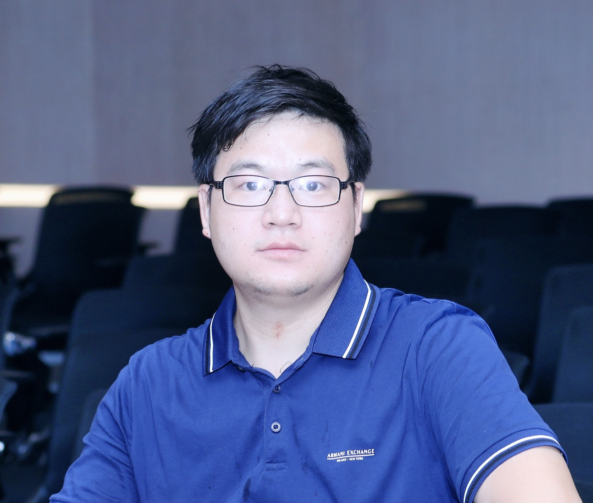 |
My research interests are deep transfer learning, natural language processing, recommender systems, privacy-preserving, and foundation models (large language models, LLMs). I have nearly ten first-author research publications that appeared in top conferences including WWW, EMNLP, NAACL, CIKM, and IJCAI, and in top journals including TKDD. Moreover, I have served as reviewer & PC member for top journals (incl. IEEE TPAMI) & conferences (incl. ACL/EMNLP/NAACL, ICML/NeurIPS/ICLR, AAAI/IJCAI, SIGKDD/CSCW/ICWSM) over 50 times.
I am looking for self-motivated master students to work with me. Undergraduates in Xidian Univ. are also highly welcomed. Drop me an email if you are interested!
招收硕士研究生：i)学术型研究方向：083500 软件工程； ii)专业型研究方向：085404 电子信息-计算机技术； iii)国家特色化示范性软件学院：085405 电子信息-软件工程（智能软件工程中心@青岛研究院）。对科研和发表论文感兴趣尤其是想继续海内外深造的本科生（建议大二就开始谋划），或者对AI感兴趣的跨学科同学，也欢迎联系。邮箱：njuhgn@谷歌邮箱.com （请把“谷歌邮箱”替换为“gmail”）
办公室: 南校区网安楼A1-627（邮编710126），西电，西安，陕西。阳光大厦1701-01（邮编266109），西电青岛研究院，青岛，山东。
link |
Proj. Page | "Most Influential CIKM Papers"
CoNet: Collaborative Cross Networks For Cross-Domain Recommendation Ranking #6, CIKM 2018. Retrieved on March 3, 2021 |
|
|
| Area Chair
2026: EACL |
| PC Member / Reviewer
2025: KDD, COLING, ICLR, WWW, ICML 2024: ICLR, AAAI, LREC-COLING, ICWSM, SDM, ICML, KDD, ACL, ACM MM, COLM, NeurIPS 2023: ICLR, ICML, ACL, CIKM, NeurIPS, EMNLP 2022: AAAI, IJCAI, ICLR, ACL Rolling Review (ACL/NAACL), ICML, ICWSM, LREC, KDD, RecSys, COLING, EMNLP, NeurIPS 2021: IJCAI, EACL, NAACL, ACL, EMNLP, ICWSM, CSCW, CogSci, ICML, NeurIPS 2020: AAAI, IJCAI, ACL, EMNLP, WWW, ICML, NeurIPS 2019: ICWSM, MobileHCI, CSCW, ISWC (Wearable Computing), ACL, EMNLP |
| Journal Reviewer
2021: IEEE TPAMI |
| Conference Organization
2021: AAAI Workflow Co-Chair, Aug 2020 - Feb 2021, AAAI |
| Session Chair
2015: IJCAI Main track “Knowledge Acquisition”, Jul 25-31, 2015, Buenos Aires, Argentina. |
| Student Volunteer
2019: NAACL, Jun 2-7, 2019, Minneapolis, USA |
| 学位论文评审专家
2026, 2025, 2024, 2023 | 中科院软件所 中科院深圳，中山大学 天津大学 厦门大学 同济大学 四川大学 重庆大学 兰州大学 中央民族大学，国防科大 华中科技大学 杭州电子科技大学 陕西科技大学，西北工业大学 合肥工业大学 浙江工业大学 北方工业大学，大连理工 华南理工 武汉理工 华东理工 重庆理工 昆明理工，华南师范大学 华东师范 江西师范大学 重庆师范大学 河南师范大学，火箭军工程大学，苏州大学 中国地质大学 中国矿业大学 北京交通大学 安徽大学 新疆大学 南京信息工程大学， 山西大学 湖北大学 西安邮电大学 安徽农业大学 合肥大学 西华大学（四川成都） 河北工程大学 五邑大学（广东江门） 佳木斯大学（东方第一城） 天津职业技术师范大学 |
| Voluntary & Social Services
Computer Lab Assistant (系机房管理员助理), Computer Science Department, Nanjing University, 2009-2013 Counsellor Assistant (系辅导员助理), Computer Science Department, Nanjing University, 2011-2012 Librarian Assistant (系图书管理员助理), Computer Science Department, Nanjing University, 2013-2015 Wikipedia Contributor (username: "Velvel2"), Over 700 edits, since 28 August 2014 |
|
|
| Hong Kong University of Science and Technology (HKUST 香港科大)
PhD in Computer Science and Engineering, 2016 - 2021, Hong Kong Advisor: Prof. Qiang Yang（杨强） & Prof. Lei Chen（陈雷） (Co-supervisor) Thesis: Deep and Adversarial Knowledge Transfer in Recommendation | |
| Nanjing University (NJU 南京大学)
Master in Computer Science and Technology, 2013 - 2016, Nanjing Advisors: Prof. Xinyu Dai（戴新宇） & Prof. Jiajun Chen（陈家骏） Natural Language Processing Group (自然语言处理研究组) | |
| Nanjing University (NJU 南京大学)
Bachelor in Computer Science and Technology, 2009 - 2013, Nanjing GPA: 4.33/5, Rank: 17/165 |
AAAI-21 Workflow Chair Honorarium, 2020, AAAI
🏅HKPFS (香港博士研究生獎學金計劃), 2016-2020, Research Grants Council of Hong Kong, Hong Kong SAR
Excellent Graduate Student Mention (提名), 2016, Nanjing University
🥇National Scholarship (国奖), 2015, Ministry of Education, China
Excellent Undergraduate Student (优秀毕业生), 2013, Nanjing University
National Scholarship for Encouragement (国家励志), 2012, Ministry of Education, China
"台湾知行文教獎助學金", 2011-2012, Nanjing University
HKUST Research Travel Grant 2017 (HK$7,863): PAKDD-17, May 23 - 26, Jeju, South Korea, 2017. Oral
HKUST Research Travel Grant 2018 (HK$8,000): ICML-18, Jul 10 - 15, Stockholm, Sweden, 2018. Workshop poster
HKPFS Conference Allowance 2018 (HK$14,045): KDD-18, Aug 19 - 23, London, UK, 2018. Workshop oral
HKUST Research Travel Grant 2018 (HK$7,922): CIKM-18, Oct 22 - 26, Turin, Italy, 2018. Oral
SIGIR Student Travel Grants for CIKM 2018 (US$1,000)
HKPFS Conference Allowance 2019 (HK$13,534): WWW-19, May 13-17, San Francisco. Poster
NAACL 2019 Travel Grant (US$1,300): NAACL-19, Jun 2-7, Minneapolis. Oral
slides |
"Personalized Neural Embeddings for Collaborative Filtering with Text"
NAACL 2019 Oral presentation, 4 Jun 2019, Minneapolis, Minnesota [Schedule] |
slides |
"Recommender Systems: Two Threads and Their Meeting"
WeChat Course (微信“四点一课”), 22 Mar 2019, WeChat@TIT, Guangzhou [Poster] |
slides |
"CoNet: Collaborative Cross Networks for Cross-Domain Recommendation"
CIKM 2018 Oral presentation, 24 Oct 2018, Turin, Italy [Schedule] |
slides |
"CoNet: Collaborative Cross Networks for Cross-Domain Recommendation"
KDD 2018 Workshop UMCit, 20 Aug 2018, London [Schedule] |
slides |
"Integrating Reviews into Personalized Ranking for Cold Start Recommendation"
PAKDD 2017 Oral presentation, 26 May 2017, Jeju, South Korea [Schedule] |
slides |
"融合多源信息的推荐系统"
Memect (文因互联)周末学术交流会, 20 Feb 2016, Beijing [Poster] |
slides |
"A Synthetic Approach for Recommendation: Combining Ratings, Social Relations, and Reviews"
IJCAI 2015 Oral presentation, 30 Jul 2015, Buenos Aires, Argentina [Schedule] |
slides |
"A Synthetic Approach for Recommendation: Combining Ratings, Social Relations, and Reviews"
CIPS-YSS NLP Seminar (中文信息学会长三角地区自然语言处理青年学者论坛), 25 May 2015, Nanjing University, Nanjing [Schedule] |
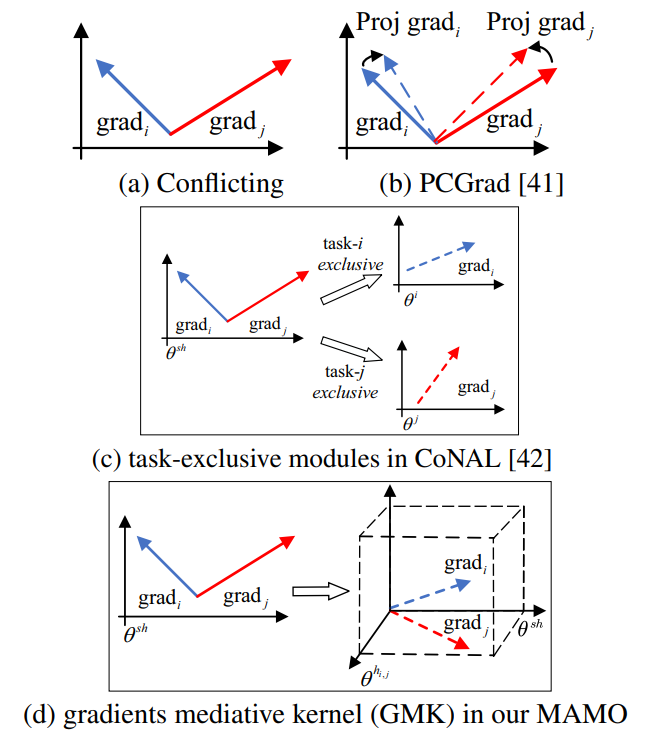
⚙️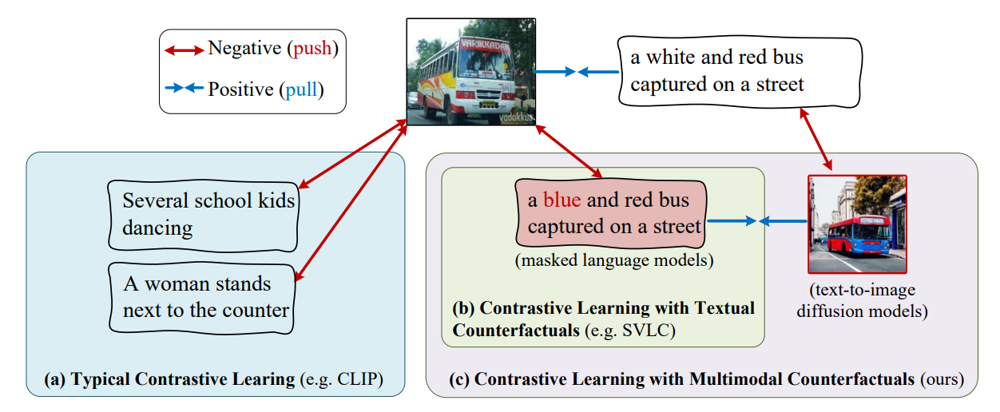
🎯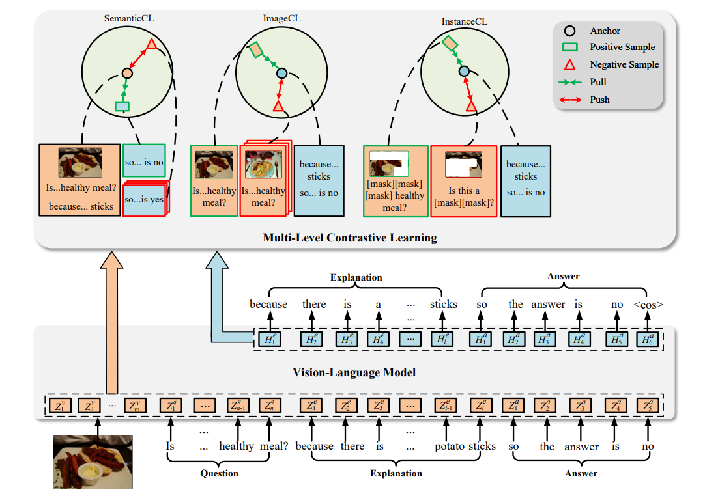
🔍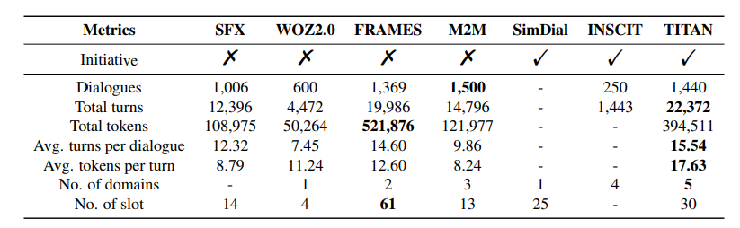
💬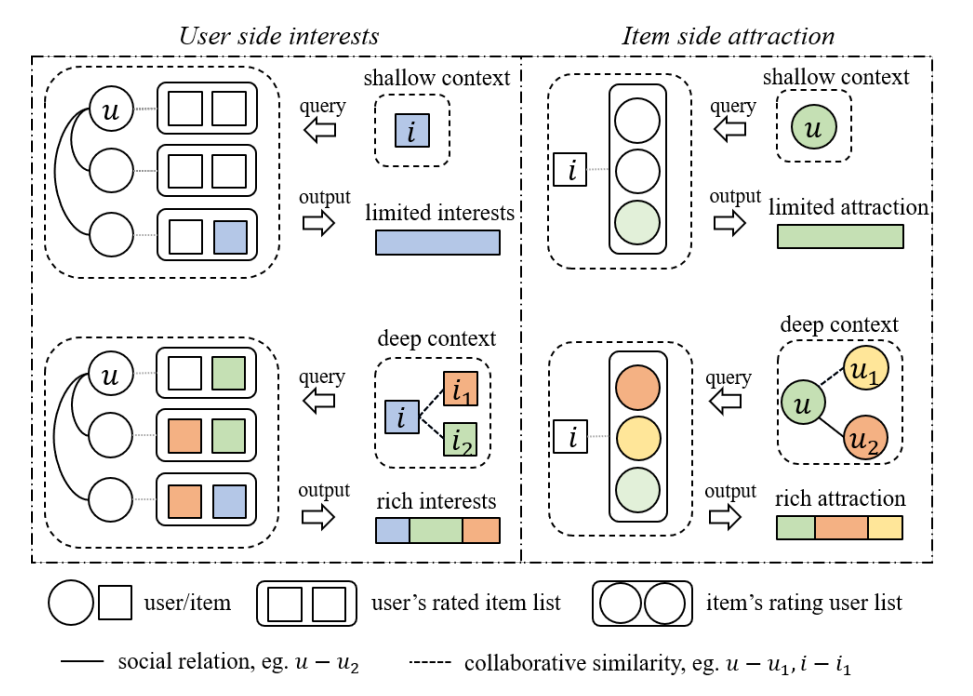
🌐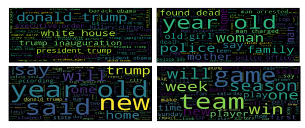
📰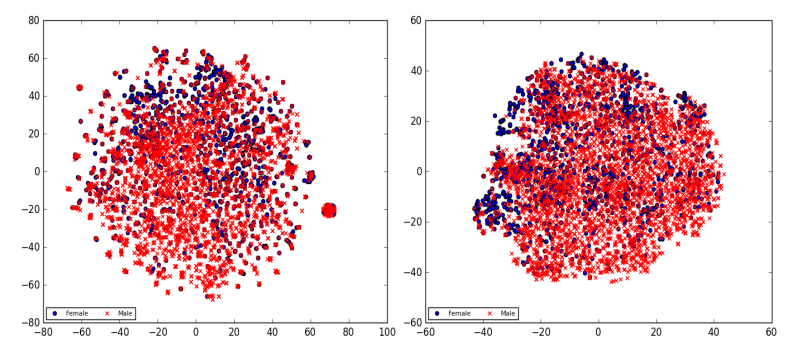
🔒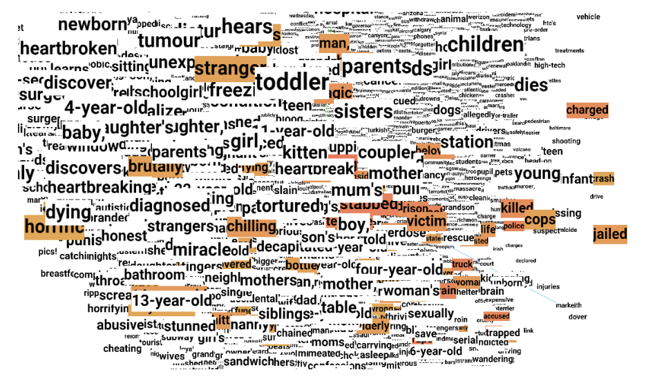
🧬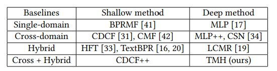
🔄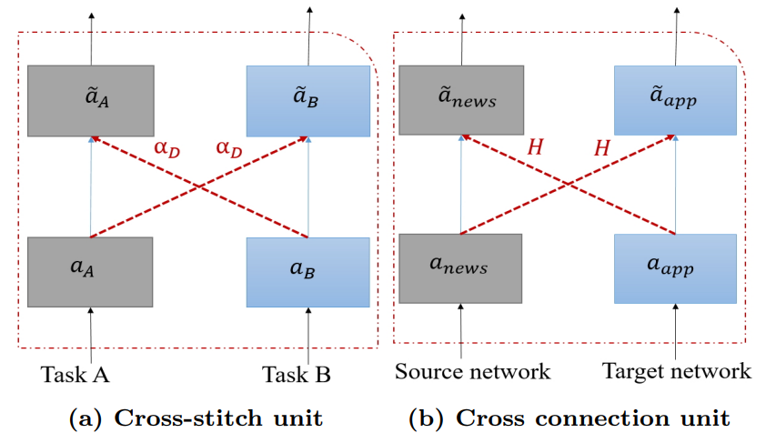
🌲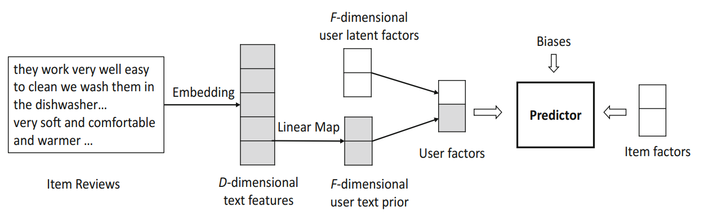
⭐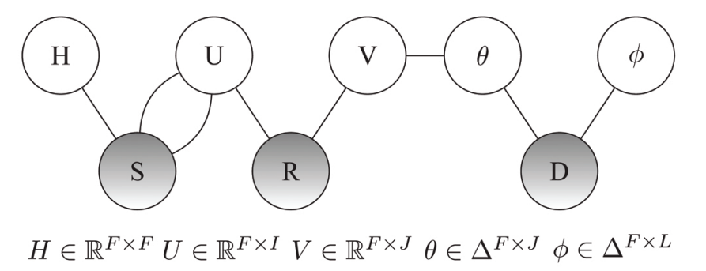
🎯


- MTNet: A Neural Approach for Cross-Domain Recommendation with Unstructured Text. Guangneng Hu, Yu Zhang, Qiang Yang. KDD Deep Learning Day, 2018
- CoNet: Collaborative Cross Networks for Cross-Domain Recommendation. Guangneng Hu. ICML Workshop on Towards learning with limited labels, 2018
- Deep and Adversarial Knowledge Transfer in Recommendation. Guangneng Hu, Supervisors: Qiang Yang, Lei Chen. Hong Kong University of Science and Technology, 2021. | [Official], [PQDT-Global]
- 推荐系统中多源信息融合和隐式反馈挖掘的研究. Guangneng Hu, Supervisors: Xin-Yu Dai. Nanjing University, 2016.
计算机系优硕提名（3人；优硕3人）
| "Chapter: Transfer Learning in Recommender Systems". Weike Pan, Guangneng Hu
In Transfer Learning, p.279-288. Qiang Yang, Yu Zhang, Wenyuan Dai, Sinno Pan. Cambridge Univ. Press, UK, 2020. | [Chinese Version] |
"Research is for curiosity and fun, though practical implications can emerge." --- Zhihua Zhou
I have been working on the following topics:
- Deep & Adversarial transfer learning: CoNet (CIKM'18) [Proj. Page], TMH (TheWebConf'19), PrivNet (EMNLP'20 Findings)
- Natural language processing: TBPR (PAKDD'17), PNE (NAACL'19), TrNews (EACL'21)
- GNNs & Recommender systems: MR3 (IJCAI'15), MR3++ (TKDD'18), DICER (TheWebConf'21) [Proj. Page]
- Dialogue system: TITAN (IJCAI'23) [Proj. Page]
- Vision-language models: MCLE (AAAI'24) [Proj. Page]
While some new ones are coming in:
- Multimodal learning: NER, VQA, VQA-NLE, Vision-language models, CLIP-like loss
- Large language models (LLMs): Recsys
- Artificial intelligence-generated content (AIGC): Counterfactual
校友访谈 | 胡光能：人工智能研究与多元世界的碰撞, HKUST GSAA, 3月29日, 2025
迁移学习阅读贴士, 机器之心, 8月17日, 2020
如何杜绝垃圾邮件的“入侵” (Tips for fighting spam emails), 《中学科技》 (Junior Science), 2014年 第11期 (PDF, Link)
AI blogs on 52cs.com, 2014 - 2015
You and Your Research, Richard Hamming, Bell Communications Research [pdf]
How to write a great research paper, Simon Peyton Jones, Microsoft Research Cambridge
Instructions for PhD Students, Dimitris Papadias, HKUST
|
知之为知之 不知为不知 是知也 --- 《论语·为政》 |
经验主义大行其道 终究要追寻 理性主义的解释 --- 胡光能 |